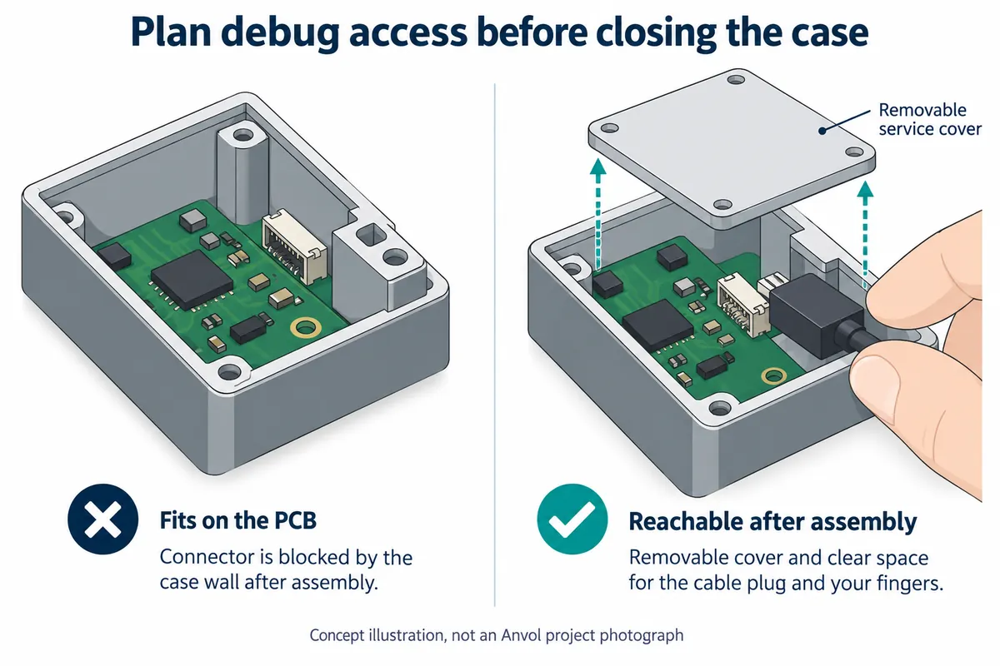

Your prototype works on the desk. Now it needs a case so someone else can try it. Before approving that enclosure, ask your engineer to connect the debugging tool with the board mounted in its intended position. A connector that is easy to reach on a loose board can disappear behind a battery, a mounting post or the case wall.
For a small team preparing its first user trials, this is a practical handover question: when a unit comes back with an unexplained fault, can the person investigating it reach the right interface without dismantling the whole product? The answer affects the board layout, the enclosure and the service instructions together.
The aim is a deliberate access route for authorized engineering work. That might be under a removable cover, or through pads reached by a service fixture. It does not have to be an exposed connector on the outside of the finished product.

The interface exists. Can someone actually use it?
SWD, or Serial Wire Debug, is one interface an engineer may use to communicate with a microcontroller through a debug probe. It has separate clock and bidirectional data signals. A real connection also needs the appropriate ground reference: Raspberry Pi's three-pin debug connector specification assigns a ground pin alongside the two signals. “Two-wire debug” is not a complete cable specification.
This distinction becomes tangible in Seeed's Chinese Wio Terminal debugging tutorial. It locates the SWD pads on the bare board and describes bringing out clock, data and ground wires. In a May 28, 2020 forum question, a user who had read the SWD instructions first needed to know how to open the case without damaging it. Having documentation for the electrical interface had not answered the mechanical access question.
A more recent example shows the same tension during development. In a September 14, 2026 Framework Community post, the creator of a Pico2-based expansion card described connector-placement constraints and incompatibility with the official case. That is one developer's prototype report, not evidence of an industry-wide trend. It does show why connector position and enclosure design need to be considered together.
Decide what “accessible” means for your team
Start with the person who will use the port. An engineer opening a returned prototype at a workbench has different needs from a tester expected to collect logs at home. Write down the intended task and who is allowed to do it. If ordinary testers only need logs, do not assume they also need a hardware debugger.
Next, examine the assembled object with the actual mating cable or fixture. The connector body may fit while the cable cannot bend out of the way. A hand may need room to release a latch. Pads on the underside may be reachable before assembly but covered by the mounting plate afterward. These are questions to check on your design, not failures shown in the Seeed tutorial above.
Compare the access options against that task. A removable service cover can make a connector reachable but adds a part and a closing procedure. Exposed test pads can avoid a permanent connector but require a dependable way to locate and contact them. Removing the board may be acceptable for an early prototype if that is an explicit, documented choice. None of these options is automatically the best one for every small batch.
Make the connection unambiguous
A matching plug does not identify an interface. Raspberry Pi's specification uses the same connector family for UART and serial debug, with different signal functions, and calls for clear interface markings. Record which port is SWD, which is a serial console, the pin orientation and the relevant board revision. Keep that information available when the board is inside the case, rather than relying on a label that assembly hides.
Your engineer should also document the probe, target voltage, power arrangement and software configuration used for the check. Follow the requirements of the actual board and probe; a connector diagram for another product is not enough. A USB port used to upload normal firmware does not, by its presence alone, establish that hardware debugging is available through that port.
Physical access is only one part of the result. The selected tool must support the target, and the device's debug permissions must allow the intended operation. Do not turn “we included debug pads” into a promise that any failed or locked device can be recovered. Decisions about restricting debug access in shipped units belong alongside this service plan.
Ask for a demonstration on the assembled prototype
Before the first trial units leave the workshop, ask the engineer to perform the intended service procedure on an assembled unit. Start with opening the permitted cover, connecting the specified tool and confirming that it can communicate with the expected target. If programming or a recovery operation is part of the plan, demonstrate that separately under the project's approved procedure; it may change firmware or erase data.
Keep a short record of what worked: board and enclosure revisions, cable orientation, tool configuration, power state and the access steps. Include a photograph of the actual connection when you have one. Then have another team member follow those instructions. This is a proposed acceptance check, not a claim that the designs discussed here have passed it.
That demonstration gives you a useful decision before the enclosure becomes harder to change: keep the access route, move the connector, revise the cover or accept a documented disassembly step. If your board and enclosure are ready for this review, contact Anvol with the current design and the service task you need to preserve.